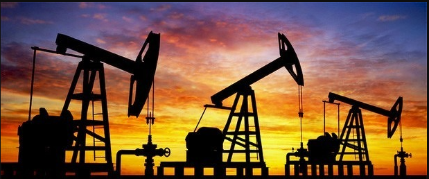

Economie vs milieu
Wij vinden het milieu natuurlijk belangrijk en nodig voor de samenleving. Toch vinden wij de economie belangrijker!
De economie gaat voor het milieu, want hoe krijgen we anders het geld om de klimaat veranderingen te stoppen.
We zorgen er voor dat we zoveel mogelijk grondstoffen kunnen krijgen en daar meer economische groei kunnen krijgen.
Deze grondstoffen kunnen we krijgen uit landen zoals Vietnam en de Arabische olie velden. Ons plan is deze plekken over te nemen
voor meer economische groei. In conclusie economie gaat voor.
